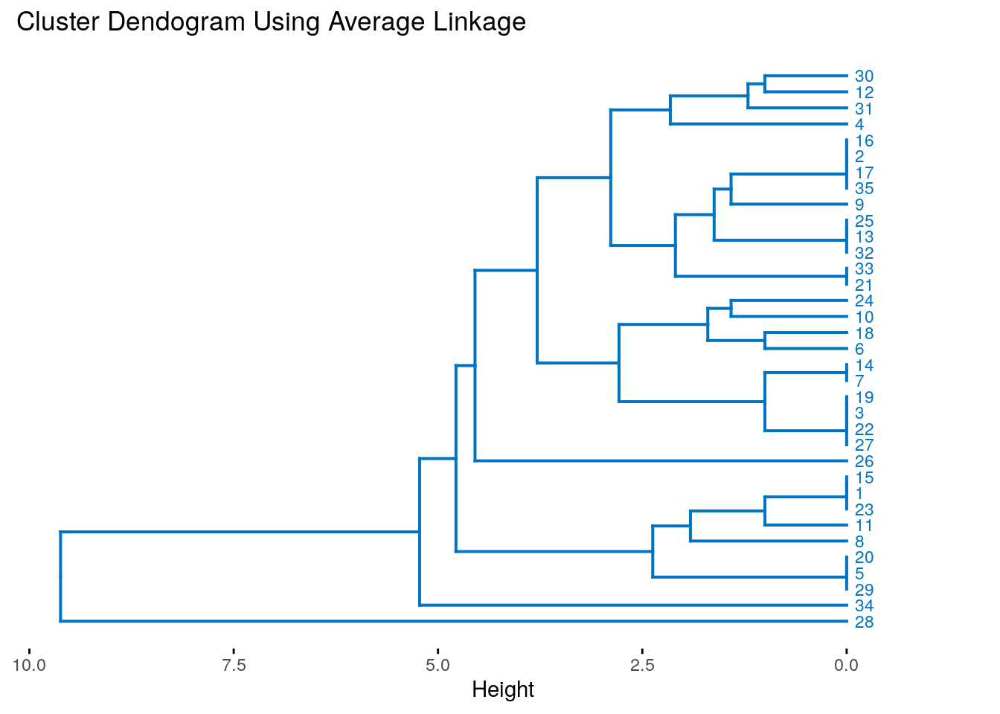
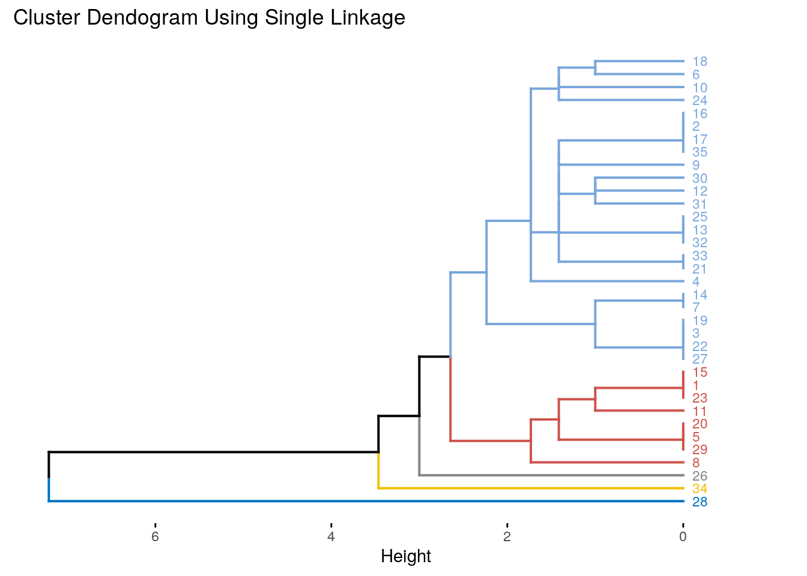

setwd(".")
set.seed(1122)
options("digits"=3)
library(factoextra)
library(ggplot2)
library(dplyr)
library(cluster)text2csv <- function(in.file,out.file) {
mammals.df <- read.csv(file= in.file,
header = FALSE,
sep = "",
dec = ".",
comment.char = "#"
)
write.csv(mammals.df, file = out.file)
mammals.df <- read.csv(file= out.file,
header = TRUE,
sep = ",",
dec = ".",
comment.char = "#",
skip = 4
)
write.csv(mammals.df[,2:10], file = out.file,row.names = F)
mammals.df <- read.csv(out.file,row.names = 1)
return( mammals.df)
}
mammals.df <- text2csv(in.file = "file19.txt", out.file = "mammals.csv")
summary(mammals.df)## I i C c P p M
## Min. :0.0 Min. :0.00 Min. :0.000 Min. :0.000 Min. :0.00 Min. :0.00 Min. :0.00
## 1st Qu.:1.0 1st Qu.:1.00 1st Qu.:0.000 1st Qu.:0.000 1st Qu.:2.00 1st Qu.:1.00 1st Qu.:1.00
## Median :2.0 Median :3.00 Median :1.000 Median :1.000 Median :3.00 Median :3.00 Median :3.00
## Mean :1.8 Mean :2.38 Mean :0.591 Mean :0.545 Mean :2.56 Mean :2.42 Mean :2.45
## 3rd Qu.:3.0 3rd Qu.:3.00 3rd Qu.:1.000 3rd Qu.:1.000 3rd Qu.:3.00 3rd Qu.:3.00 3rd Qu.:3.00
## Max. :5.0 Max. :4.00 Max. :1.000 Max. :1.000 Max. :4.00 Max. :4.00 Max. :8.00
## m
## Min. :0.00
## 1st Qu.:2.00
## Median :3.00
## Mean :2.64
## 3rd Qu.:3.00
## Max. :8.00mammals.scaled <- scale(mammals.df)
rm(mammals.df)fviz_nbclust(mammals.scaled, kmeans, method="wss") # Elbow method minimizes totalfviz_nbclust(mammals.scaled, kmeans, method="silhouette") # Silhouette methodset.seed(1122)
kmu <- kmeans(mammals.scaled, centers=7,nstart=40)
#png(filename="mammalCluster.png", units = "px", width=2000, height=2000)
fviz_cluster(kmu, data=mammals.scaled)#dev.off()obsxclus <-as.data.frame(table(kmu$cluster))
names(obsxclus) <-c("Cluster","Observations")
print(obsxclus)## Cluster Observations
## 1 1 17
## 2 2 19
## 3 3 8
## 4 4 10
## 5 5 9
## 6 6 2
## 7 7 1rm(obsxclus)print(paste("Total SSE :", kmu$tot.withinss))## [1] "Total SSE : 61.8750144556537"SSExclus <-c()
for (x in 1:max(kmu$cluster)){
SSExclus <-rbind(SSExclus,c(x,kmu$withinss[x]))
}
colnames(SSExclus) <- c("Cluster", "SSE")
print(SSExclus)## Cluster SSE
## [1,] 1 14.92
## [2,] 2 15.57
## [3,] 3 4.24
## [4,] 4 18.58
## [5,] 5 6.34
## [6,] 6 2.22
## [7,] 7 0.00rm(SSExclus,x)for (x in 1:max(kmu$cluster)){
cat(paste("Group ",x, ":\n",paste(names(which(kmu$cluster==x)),collapse = ", ")) ,"\n")
}## Group 1 :
## Marten, Fisher, Weasel, Mink, Ferrer, Wolverine, Badger, Skunk, River otter, Sea otter, Jaguar, Ocelot, Cougar, Lynx, Fur seal, Sea lion, Grey seal
## Group 2 :
## Pika, Snowshoe rabbit, Beaver, Marmot, Groundhog, Prairie Dog, Ground Squirrel, Chipmunk, Gray squirrel, Fox squirrel, Pocket gopher, Kangaroo rat, Pack rat, Field mouse, Muskrat, Black rat, House mouse, Porcupine, Guinea pig
## Group 3 :
## Brown bat, Silver hair bat, Pigmy bat, House bat, Red bat, Hoary bat, Lump nose bat, Peccary
## Group 4 :
## Opossum, Hairy tail mole, Common mole, Star nose mole, Coyote, Wolf, Fox, Bear, Civet cat, Raccoon
## Group 5 :
## Elk, Deer, Moose, Reindeer, Antelope, Bison, Mountain goat, Musk ox, Mountain sheep
## Group 6 :
## Walrus, Elephant seal
## Group 7 :
## Armadillorm(x)set.seed(1122)
mammals.sample <-sample_n(read.csv("mammals.csv",row.names = 1),size = 35) hclust.single <- eclust(mammals.sample, FUNcluster = "hclust",hc_method="single")## Clustering k = 1,2,..., K.max (= 10): .. done
## Bootstrapping, b = 1,2,..., B (= 100) [one "." per sample]:
## .................................................. 50
## .................................................. 100hclust.complete <- eclust(mammals.sample, FUNcluster = "hclust",hc_method="complete")## Clustering k = 1,2,..., K.max (= 10): .. done
## Bootstrapping, b = 1,2,..., B (= 100) [one "." per sample]:
## .................................................. 50
## .................................................. 100hclust.average <- eclust(mammals.sample, FUNcluster = "hclust",hc_method="average")## Clustering k = 1,2,..., K.max (= 10): .. done
## Bootstrapping, b = 1,2,..., B (= 100) [one "." per sample]:
## .................................................. 50
## .................................................. 100fviz_dend(hclust.average,show_labels=T ,palette="jco",cex = .6, hang=-.5,horiz = T,main = "Cluster Dendogram Using Average Linkage")
fviz_dend(hclust.complete,show_labels=T ,palette="jco",cex = .6, hang=-.5,horiz = T, main = "Cluster Dendogram Using Complete Linkage")fviz_dend(hclust.single,show_labels=T ,palette="jco",cex = .6, hang=-.5,horiz = T,main = "Cluster Dendogram Using Single Linkage")## (b) Finding the clusters formed by two singleton clusters.
print2sing <- function(hc) {
for (x in 1:34){
if(hc$merge[x,1] <0 & hc$merge[x,2] <0){
cat(paste("\t{",rownames(mammals.sample[ - hc$merge[x,1],] ),
", ",rownames(mammals.sample[ - hc$merge[x,2],] ),"}\n"))
}
}
}
cat("Two singleton clusters formed using Single Linkage:\n")## Two singleton clusters formed using Single Linkage:print2sing(hclust.single)## { 1 , 15 }
## { 2 , 16 }
## { 3 , 19 }
## { 5 , 20 }
## { 7 , 14 }
## { 13 , 25 }
## { 21 , 33 }
## { 6 , 18 }
## { 12 , 30 }cat("\nTwo singleton clusters formed using Complete Linkage\n")##
## Two singleton clusters formed using Complete Linkageprint2sing(hclust.complete)## { 1 , 15 }
## { 2 , 16 }
## { 3 , 19 }
## { 5 , 20 }
## { 7 , 14 }
## { 13 , 25 }
## { 21 , 33 }
## { 6 , 18 }
## { 12 , 30 }
## { 10 , 24 }cat("\nTwo singleton clusters formed using Average Linkage\n")##
## Two singleton clusters formed using Average Linkageprint2sing(hclust.average)## { 1 , 15 }
## { 2 , 16 }
## { 3 , 19 }
## { 5 , 20 }
## { 7 , 14 }
## { 13 , 25 }
## { 21 , 33 }
## { 6 , 18 }
## { 12 , 30 }
## { 10 , 24 }plot(hclust.single,hang = -1,main = "Cutting Single Linkage Dendogram at height 2")
groups <- cutree(hclust.single, h=2)
rect.hclust(hclust.single, h=2, border="red") hclust.single <- eclust(mammals.sample, FUNcluster = "hclust",hc_method="single",k=5)
hclust.complete <- eclust(mammals.sample, FUNcluster = "hclust",hc_method="complete",k=5)
hclust.average <- eclust(mammals.sample, FUNcluster = "hclust",hc_method="average",k=5)
fviz_dend(hclust.average,show_labels=T ,palette="jco",cex = .6, hang=-.5,horiz = T,main = "Cluster Dendogram Using Average Linkage")fviz_dend(hclust.complete,show_labels=T ,palette="jco",cex = .6, hang=-.5,horiz = T, main = "Cluster Dendogram Using Complete Linkage")fviz_dend(hclust.single,show_labels=T ,palette="jco",cex = .6, hang=-.5,horiz = T,main = "Cluster Dendogram Using Single Linkage")
pDunnSil <-function(clust){
distance <-dist(scale(mammals.sample))
tt<-fpc::cluster.stats(distance,clust$cluster)
cat(paste("Dunn :",tt$dunn," ; Silhouette :",tt$avg.silwidth ,"\n"))
}
print("Printing Dunn and Silhouette for Single linkage")## [1] "Printing Dunn and Silhouette for Single linkage"pDunnSil(hclust.single)## Dunn : 0.498311590425928 ; Silhouette : 0.279715105214637print("Printing Dunn and Silhouette for Complete linkage")## [1] "Printing Dunn and Silhouette for Complete linkage"pDunnSil(hclust.complete)## Dunn : 0.264284056236123 ; Silhouette : 0.358050645951175print("Printing Dunn and Silhouette for Average linkage")## [1] "Printing Dunn and Silhouette for Average linkage"pDunnSil(hclust.average)## Dunn : 0.498311590425928 ; Silhouette : 0.279715105214637rm(hclust.single,hclust.complete,hclust.average)set.seed(1122)
htru.df <-read.csv(file = "HTRU_2-small.csv")
htru.pca <- prcomp(scale(htru.df[,1:8]))htru.pca$sdev## [1] 2.039 1.458 0.898 0.674 0.511 0.398 0.143 0.124summary(htru.df)## mean std.dev kurtosis skewness mean.dm.snr std.dev.dm.snr kurtosis.dm.snr
## Min. : 5.8 Min. :24.8 Min. :-1.74 Min. :-1.8 Min. : 0.2 Min. : 7.4 Min. :-2.8
## 1st Qu.:100.8 1st Qu.:42.4 1st Qu.: 0.03 1st Qu.:-0.2 1st Qu.: 1.9 1st Qu.: 14.5 1st Qu.: 5.7
## Median :114.9 Median :47.0 Median : 0.22 Median : 0.2 Median : 2.8 Median : 18.6 Median : 8.4
## Mean :110.9 Mean :46.6 Mean : 0.48 Mean : 1.8 Mean : 12.4 Mean : 26.4 Mean : 8.3
## 3rd Qu.:127.0 3rd Qu.:51.1 3rd Qu.: 0.48 3rd Qu.: 0.9 3rd Qu.: 5.6 3rd Qu.: 28.7 3rd Qu.:10.7
## Max. :189.7 Max. :91.8 Max. : 7.88 Max. :65.4 Max. :211.9 Max. :110.6 Max. :34.5
## skewness.dm.snr class
## Min. : -2 Min. :0.000
## 1st Qu.: 34 1st Qu.:0.000
## Median : 82 Median :0.000
## Mean : 103 Mean :0.096
## 3rd Qu.: 139 3rd Qu.:0.000
## Max. :1191 Max. :1.000cat(paste("The first two components explain:\n",
format(100*sum(htru.pca$sdev[1:2])/sum(htru.pca$sdev),digits=4),
"% of the variance"
)
)## The first two components explain:
## 55.99 % of the variancefirst2 <-htru.pca$x[,1:2]
plot(first2[,1],
first2[,2],
col=rainbow(n=1,v = c( htru.df$class==1,htru.df$class==0)),
xlab = paste("PC1 (",
format(100*sum(htru.pca$sdev[1])/sum(htru.pca$sdev),digits=4),
"%)"),
ylab = paste("PC2 (",
format(100*sum(htru.pca$sdev[2])/sum(htru.pca$sdev),digits=4),
"%)"),
main="Plotting using PCA with first two components"
)khtwu<- kmeans(scale(htru.df[,1:8]), centers=2,nstart=25)
fviz_cluster(khtwu,
data=scale(htru.df),
main="Plotting using Kmeans Using all components")cat(paste0("In the Left cluster (2), the percentage of observations is: ",
format(100*sum(khtwu$cluster==2)/sum(khtwu$cluster==khtwu$cluster),digits=5)," %\n",
"In the Right cluster (1), the percentage of observations is: ",
format(100*sum(khtwu$cluster==1)/sum(khtwu$cluster==khtwu$cluster),digits=5)," %\n"))## In the Left cluster (2), the percentage of observations is: 88.47 %
## In the Right cluster (1), the percentage of observations is: 11.53 %cat(paste0("The 'TRUE' class label percentage of observations is: ",
format(100*sum(htru.df$class==1)/sum(htru.df$class==htru.df$class),digits=5),
" %\n",
"The 'FALSE' class label percentage of observations is: ",
format(100*sum(htru.df$class==0)/sum(htru.df$class==htru.df$class),digits=5),
" %\n"
)
)## The 'TRUE' class label percentage of observations is: 9.59 %
## The 'FALSE' class label percentage of observations is: 90.41 %cat(paste0("From the larger cluster, ",
format(100*sum(htru.df[which(khtwu$cluster==1),9]==0)/sum(khtwu$cluster==1),
digits=4),
" % belong to the majority class (0), while only ",
format(100*sum(htru.df[which(khtwu$cluster==1),9]==1)/sum(khtwu$cluster==1),
digits=4),
" % belong to the minority class (1)"
)
)## From the larger cluster, 36.17 % belong to the majority class (0), while only 63.83 % belong to the minority class (1)tn <- 100*sum(htru.df[which(khtwu$cluster==1),9]==0)
fn <- 100*sum(htru.df[which(khtwu$cluster==1),9]==1)
tp <- 100*sum(htru.df[which(khtwu$cluster==2),9]==1)
fp <- 100*sum(htru.df[which(khtwu$cluster==2),9]==0)
cat(paste0(
"As a predictive model, it presents the following results:\n\taccuracy\t: ",
format(100*(tn+tp)/(tp+tn+fp+fn),digits=4),
"%\n\tError rate\t: ",
format(100*(fn+fp)/(tp+tn+fp+fn),digits=4),
"%\n\tPresicion\t: ",
format(100*(tn)/(tn+fp),digits=4),
"%\n\tSpecificity\t: ",
format(100*(tp)/(tp+fp),digits=4),
"%\n\t\tThis results are given that the positive class was the minority class (1)",
"\nAlso, the balance accuracy (",
format(100*((tp)/(tp+fp)+(tn)/(tn+fp))/2,digits=4) ,
"%) is pretty good for such an imbalanced sample: "
)
)## As a predictive model, it presents the following results:
## accuracy : 6.4%
## Error rate : 93.6%
## Presicion : 4.612%
## Specificity : 2.521%
## This results are given that the positive class was the minority class (1)
## Also, the balance accuracy (3.566%) is pretty good for such an imbalanced sample:rm(tn,fn,tp,fp) #htru.dist <-dist(scale(htru.df[,1:8]))
#clusStats<-fpc::cluster.stats(htru.dist,khtwu$cluster) cat(paste0("The total Variance explained by the clustering is : ",
format(100*(khtwu$tot.withinss/khtwu$totss),digits=4),
" %")
)## The total Variance explained by the clustering is : 64.13 %#cat(paste("Average Silhouette width of both of the cluster is:",format(clusStats$avg.silwidth,digits=4) ,"\n"))
silho<-silhouette(khtwu$cluster, dist(scale(htru.df[,1:8])))
cat(paste0("The average Silhouette width of both of the clusters is: ",
format(sum(silho[,3])/sum(silho[,1]==silho[,1]),digits=4)
)
)## The average Silhouette width of both of the clusters is: 0.6007for (x in 1:2){
cat(paste0("The average Silhouette width of Cluster ",x," is: ",
format(sum(silho[which(silho[,1]==x),3])/sum(silho[,1]==x),digits=4)
,"\n"
)
)
}## The average Silhouette width of Cluster 1 is: 0.1516
## The average Silhouette width of Cluster 2 is: 0.6592#print("Average Silhouette width per cluster")
#clusStats$clus.avg.silwidthsset.seed(1122)
khtwu<- kmeans(scale(htru.pca$x[,1:2]), centers=2,nstart=25)fviz_cluster(khtwu,
data=scale(htru.df),
main="Plotting using Kmeans Using PCA 2 Principal components")### (ii) Average Silhouette width for both clusters?
silho<-silhouette(khtwu$cluster, dist(scale(htru.pca$x[,1:8])))
cat(paste0("The average Silhouette width of both of the clusters is: ",
format(sum(silho[,3])/sum(silho[,1]==silho[,1]),digits=4)
)
)## The average Silhouette width of both of the clusters is: 0.4292for (x in 1:2){
cat(paste0("The average Silhouette width of cluster ",x," is: ",
format(sum(silho[which(silho[,1]==x),3])/sum(silho[,1]==x),digits=4)
,"\n"
)
)
}## The average Silhouette width of cluster 1 is: 0.4521
## The average Silhouette width of cluster 2 is: 0.08426rm(list=ls())